Chapter 10: Theory of Falling Bodies II
Theory of Falling Bodies II
As a body begins to fall a centrifugal force is applied to the body and is "felt" in the opposite direction of the fall (figure 43).
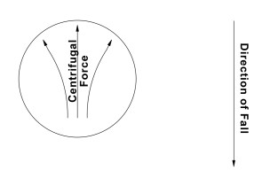Fig. 43
This centrifugal force results in mass being "compressed" at the upper portion of the body ie., in the opposite direction of the fall (figure 44).
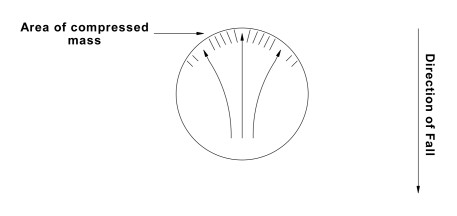Fig. 44
This area of compressed mass results in an area of greater density. To obtain greater density of any mass, the "space" within the atoms which comprise that mass must decrease, and therefore, the atoms within the compressed area of the body begin to "shed" that space (figure 45).
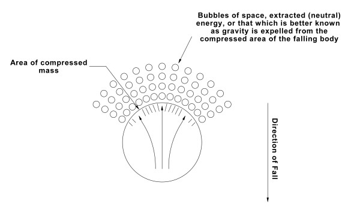Fig. 45
The compressed area, due to centrifugal force, results in an area of densified mass. This increased density results from the expulsion/extraction of the space (i.e.: gravity) contained within the atoms of that mass prior to the onset of the fall. The extracted energy from the upper portion of the body may be seen as the male factor in that its area has a higher concentration of gravity, and therefore a greater gravitational value than surrounding areas. The female area of the body, due to the motion of the body, is an area of lesser concentration of mass, causing this mass to seek to expand. The mass in the female area of the body requires "space" to accomplish an expansion of the atoms which comprise the mass (figure 46).
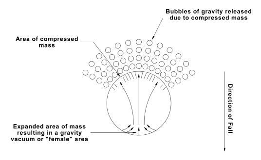Fig. 46
The male area of the body has a higher than normal density of mass and is surrounded by greater value of gravity than is the female area. Nature will always seek balance, and in the case of a falling body, this primary directive of nature is manifested by the female area "feeling" the greater gravitational value of the male area and moving toward it. This action results in the rotation or "spin" of the body.
During those early stages of a body's fall, its velocity is continually increasing, and the greater the velocity of the falling body the greater the rotation rate or spin value of that body. Due to this rotation/spin, the previously discussed centrifugal force is now being distributed around the entire body at the leading edge of the fall, or equator of the body. Centrifugal force causes mass to densify along this equator and to therefore expel space (i.e.: gravity). As the value of the rotation/spin increases in value, neutral energy (better known as gravity) is expelled or extracted along the entire equator of the body (i.e.: the leading edge of the fall) in ever increasing amounts (figure 47).
![A large sphere. An arrow on the right of the sphere is pointing DOWN, labelled: 'Direction of fall'. The sphere has a vertical line going up through the centre. The line is made up of several short arrows that have small bubbles on them. At intervals the arrows split to: vertically up, about 45 degr left and 45 degr right. Near the top of the vertical line of arrows it says: 'Centrifugal force due to the rotation of the body'. Below the sphere is another arrow labelling the small arrows. The small arrows with the bubbles arch over the sphere at the top and arch underneath toward, from our viewpoint, the front of the sphere. A label at the bottom says: 'Expelled space due to the compression of mass'](./img/fig47.jpg)
Fig. 47
We will now turn the body ninety degrees and observe a cutaway view (figure 48).
![A large sphere. An arrow on the right of the sphere is pointing DOWN, labelled: 'Direction of fall'. With the sphere is a smaller one about half the size. In the centre of the spheres it says: 'Area of expanded mass - the female factor.' From the smaller sphere to the inner edge of the larger sphere are arrows at every two hours, approx. Escaping from the outer sphere are long curved lines with bubble of them. Their curves are clockwise. The bubbles on these lines are labelled 'Extracted or expelled energy (gravity) at the leading edge of the fall.' Small arrows point toward the outer edge of the larger sphere from the far right: 'Densified mass due to the centrifugal force - the male factor.'](./img/fig48.jpg)
Fig. 48
Upon exiting the body the extracted energy moves or "flows" in a direction that lies parallel to the body. This results in the "bubbles of nothing" called gravity orbiting the falling body, and due to the continued motion of the body, each orbit completed by a given "bubble" is slightly larger than its previous orbit (figure 49).

Fig. 49
As the "squeezed out" space of the compressed or densified mass leaves the falling body it instantly obtains a greater spin velocity, which in turn tends to further the rotation/spin value of the falling body itself. The people of the Project Stardust team refer to this extracted or repelled energy as gravity A. During the times of Newton this flow of gravity was assumed to be a force which "pulled" towards the center of the body an understandable misconception in those early days. Now, however, we know that gravity is a push, not a pull, and in fact pushes beings or things existing within the area of this flow toward the surface of the body as it cycles around that body.The rotating or spinning body must have an axle of rotation. The center of the axle of rotation obtains a zero, or near zero value of motion, and therefore, little or no centrifugal force is felt at the axle. With very little centrifugal force there is no compression mass along this axle. At the same time, the leading edge of the body (90 degrees from axle) is experiencing great centrifugal force, and mass along this equator is compressed. At the center of this equatorial plane then, lies a point of zero or near zero motion, which again will contain no compressed mass. It is in these areas of low or zero motion where the mass has "room" for expansion, and the atoms within this mass will seek to expand. To accomplish expansion, space (gravity) is required, and where there is an area which lacks sufficient quantities of gravity, there can be said to exist a gravitational void or vacuum. Quite clearly, it is at the point where the axle of rotation and the equatorial plane intersect which will present the greatest gravitational vacuum (figure 50).
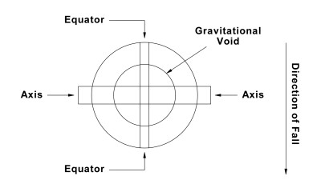Fig. 50
This situation creates a difference in potential between the dense gravity at the equator of the falling body and the lack of, or the "need" for gravity along the axle of rotation. We can therefore view the axle area as a positive, or female area, and the leading edge equator of the body as negative, or male in respect to the axle.
This difference in potential between the male and female areas causes the outwardly spiraling neutral energy shown in figure 49 to also move toward an axle area. The extracted energy (gravity) will flow from one half of the sphere (body) towards the nearest axle area, while energy extracted from the other half of the sphere will move towards the opposite axle area (figure 51).
![An arrow on the right of the diagram is pointing DOWN, labelled: “Direction of fall”. A large circle is drawn. Two long orbit lines are drawn originating from near the middle of the circle. The orbit lines have bubbles drawn on them at regular intervals and expand their orbit in ever increasing circles, gradually going further away from the circle. One orbit line goes LEFT, starts from near middle and seems to go upwards first (it is hard to make out the diagram. The other spirals upward and heading towards the RIGHT.
At the horizontal mid-point of the circle it says: “Area of axle of rotation”.](./img/fig51.jpg)
Fig. 50
We will now turn figure 51 ninety degrees and observe the axle of rotation as illustrated in figure 49. In figure 52 we will attempt to show the return of extracted energy to the falling body. Figure 49 Illustrates the outward flow of gravity, and in that figure the outermost line indicates the farthest reaches of the gravitational flow. This "edge" of the gravitational field is designated by an arrow in figure 49, and in figure 52 we will pick up where that arrow left off, and attempt to show the gravitational flow back into the body (figure 52).
![An arrow on the right of the diagram is pointing DOWN, labelled: “Direction of fall”.
A large circle is drawn. Two long orbit lines are drawn originating from near the middle of the circle. The orbit lines have bubbles drawn on them at regular intervals and expand their orbit in ever increasing circles, gradually going further away from the circle. One orbit line goes LEFT, starts from near middle and seems to go upwards first (it is hard to make out the diagram. The other spirals upward and heading towards the RIGHT.
At the horizontal mid-point of the circle it says: “Area of axle of rotation”.](./img/fig52.jpg)
Fig. 52
We now take note of a very interesting phenomenon of falling bodies. The gravitational "flow" just described is moving in the same direction in both hemispheres of the falling body, and also moves in the same direction as it re-enters the body. However, when one observes the falling body at an axle area, the ingoing vortex is perceived to be moving a given direction (i.e.: clockwise or counterclockwise), while an observer stationed at the other axle would perceive the ingoing vortex to be moving in the opposite direction. This perception is misleading however, for in reality both vortexes are moving in the same direction (figure 53).
![A large circle is drawn. Two long orbit lines are drawn vertically, originating from near the middle of the circle. Arrowheads on the lines show they orbits are upwards, as we view the diagram. The line that started just slightly on the left-hand side of the middle spirals leftwards, in ever greater orbit. The line starting on the right-hand side does the same, except it spirals towards the right. Above this portion of the diagram is a label: “180 degrees”
On either side of the large circle and orbits are other diagrams of spirals. The spriral on the left turns anti-clockwise. Above it a label says: “90 degrees to the left”
The spiral on the right goes clockwise. Above it a label says: “90 degrees to the right”](./img/fig53.jpg)
Fig. 53
This phenomenon is very difficult to clearly show in an illustration, yet it is absolutely vital to an understanding of atomic particle assimilation/atomic structure, so if this concept is yet unclear, we suggest the reader take a moment and test it out first hand through the following simple means.
Take any spherical object that's handy a ball, orange, grapefruit, etc. and designate an axle on each end of the sphere. Now, with one of your axles pointing upwards, draw a curved arrow around that axle to denote the direction of gravitational flow. Lift the sphere straight up and place a curved arrow around that axle also making very sure that when viewed from the side, the two arrows are pointing in the same direction. Next, look at the top of your sphere and note whether the arrow points clockwise or counter-clockwise, then, turn your sphere over and note the arrow points in the opposite direction. Much becomes very simple and logical when one realizes that seeming contradictions in nature do not require one to concoct exceptions to every rule, but merely to understand the rule.
ELECTRIC/MAGNETISM
We have seen why a falling body begins to rotate/spin, and we've seen that the same factors of greater/lesser potential (due to centrifugal force) produce the mysterious force now spoken of as "attractive" gravity. Now we will move into a discussion of the Siamese twin of gravity and attempt to explain the creation of a magnetic field. To do this we must first find solid footing to build upon, and so must back up to the time of empirical science and the infinitely valuable and reliable work of Michael Faraday.
Michael Faraday discovered through hands-on experimentation that a spinning disc resulted in a flow of electric (mass) from the circumference of the spinning disc to the axle of the disc (figure 54).
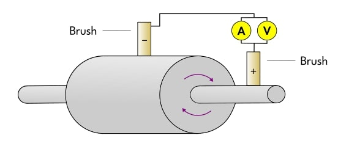Fig. 54
Please note that existing drawings of Faraday's "unipole" generator show opposite brus polarities. Until very recently it was believed that electric flowed from positive to negative. Faraday found that an increase of R.P.M. resulted in an increased electrical flow. He also found that a consistent R.P.M. with an increased circumference of the disc would result in an increase of electrical flow. We can therefore deduce that the sum total factor is the velocity of the circumference.
We will now look at the element consistency of a disc at rest, ie., not turning (figure 55).
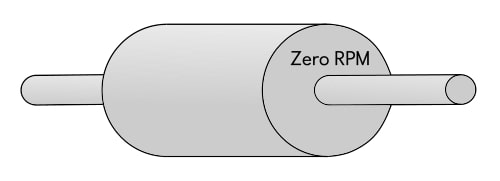Fig. 55
As the above disc (which is not turning) is carefully checked with instruments, it is found that the disc is absolutely isotopic. This simply means that the atoms in the disc are consistent and in balance, and that each atom within the elements of the disc are using equal amounts of space. Now, using the very same disc but turning it at a rate of 2000 R.P.M. we observe a complete change in the consistency. The axle and the area in the immediate vicinity of the axle become severely isotopic. In turn, the circumference of the spinning disc becomes severely radioisotopic (figure 56).
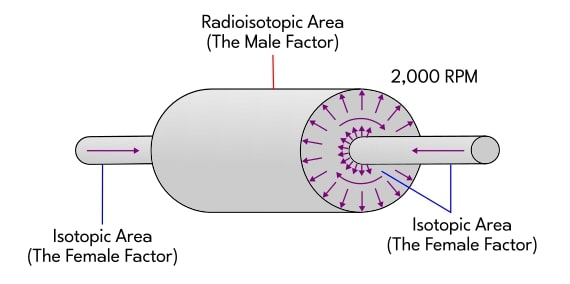Fig. 56
We have seen that a falling body produces an area of compressed mass which in turn causes the body to spin/rotate. We've seen that to compress mass the space the atom normally possesses is reduced, and that this extracted energy (gravity/space) then detects the lesser gravitational potential at the axle - at which time it moves toward this void and re-enters the body. It has likewise been shown that this extracted energy, in its travels around the body, "pushes" all things existing within the gravitational field toward the surface of the body. This is gravity A - the "attractive portion" of gravity.
With all of this reasonably clear we may now continue on and examine the inertial force which allows the Faraday generator to function, and in so doing we can readily show why a falling body produces a magnetic field.
That which generates the "power" to produce a flow of electric (i.e.: mass) is motion. Motion is the result of gravity, and without gravity there can be no motion. The value of electrical
flow is directly proportional to the velocity of the motion. Once again we turn to the Faraday generator (figure 57).
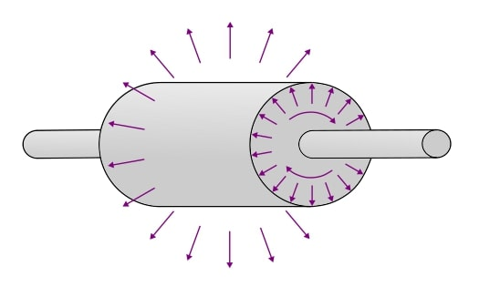Fig. 57
Due to centrifugal force, mass is forced from the axle area toward the surface of the spinning/rotating disc, and the movement of mass from the axle area to the circumference (surface) is very rapid. This rapid movement of the mass results in the moving mass obtaining an inertia force. The inertia force experienced by the atoms and particles is so great that this mass is thrown out, or leaves the rotating disc. This forced out mass results in the area around the disc (or body) being filled with high velocity particles and atoms of mass. This area is then said to be filled with electric.
The axle area of the rotating/spinning disc or body now presents a condition where mass is "missing". The axle area of "missing mass" is now seen as a positively charged area (or female factor). The escaped mass (i.e.: electrical field) around the spinning/rotating disc or body becomes the male factor and can be seen as or measured by instruments as a negative charge. At this point then, the disc is in an unbalanced state, with an abundance of mass around the circumference, and a severe absence of mass along the axle. The mass ejected due to inertia forces will continue to move out away from the disc until it detects the difference in potential between it and the axle, at which time it will move toward the axle and re-enter the disc in order to re-establish balance between the male and female areas.
It is commonly known that electric will follow the path of least resistance. Should a brush be placed on the axle and on the circumference of a spinning disc with a conductor between the brushes, a current (or electric) flow will exist in the conductor. In the case of the Faraday generator, should brushes and conductor not be used, an electrical flow is detected from the circumference of the rotating body to the axle areas through the air (figure 58).
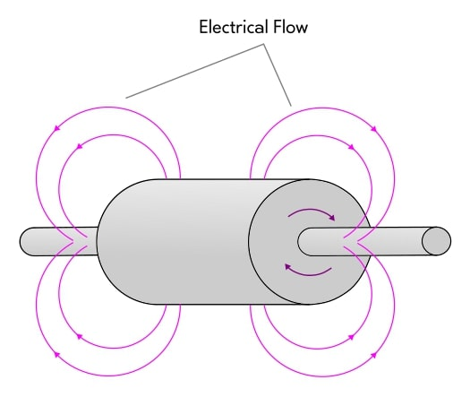Fig. 58
This flow of electricity has been proven through careful testing by the Project Stardust team and by researchers globally. Now, by applying what has been said to a falling body, the "secret" of the repulsive force can be seen, and a primary consideration in this discussion is direction of motion - and the direction of an electrical flow can be predetermined.
If the Faraday generator ware placed in a concise east-west direction before being rotated, and if the generator were to be constructed of a material with a low permeability value, the flow of electric would be as shown previously in figure 58. However, should the same generator be placed in a precise magnetic north-south direction, the electrical flow will be as shown in figure 59.
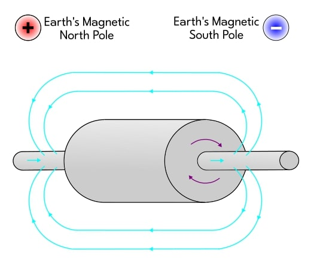Fig. 59
This flow of electric to the north (+) magnetic pole of this planet is due to a very common fact - electric (i.e.: mass) follows the path of least resistance. So that there is no confusion as to why this is the path of least resistance we will pause momentarily and speak of terrestrial electricity. That which is called atmospheric electricity flows from the south magnetic pole of planet earth to the north magnetic pole. Although this south (-) to north (+) flow of atmospheric electricity is grossly distorted (sometimes so much so that it flows west to east), the main flow is nevertheless from pole to pole. To follow the path of least resistance the electric (mass) produced by the Faraday generator must flow with the electric flow of planet earth. To flow against the earth's atmospheric electric flow would create resistance to the flow of the generator, and so it will not take this path. The law applies - electric follows the path of least resistance.
Having clarified that point we may now apply what we know of the Faraday generator to a falling body in general, and so move a bit closer to understanding the elusive repulsive force.
To quickly review: a falling body rotates due to centrifugal force, creating an area of compressed mass. When a falling body rotates/spins, centrifugal force is applied at the equator, or leading edge of the fall. This in turn causes the atoms and particles within the body to be affected by the law of inertia and to be ejected from the falling body (see figure 60).
![An arrow on the right of the diagram is pointing DOWN, labelled: “Direction of fall”.
Another label says: “A falling body produces the same electrical effects as Faraday’s generator”. Another label says: ”cut-away view 90 degrees from the poles”.
A large circle is shown, with a smaller circle in its centre. Arrows originate from the smaller circle outwards to the larger circle. The inner arrows are labelled: “Compressed mass due to centrifugal force”. From the larger circle arrows progress outwards at perpendicular angle. They are labelled: “Ejected mass due to the force of inertia”](./img/fig60.jpg)
Fig. 60
It is now time to show some of the finer details of what was happening to those test balls by applying what we know of gravity and magnetism. Figure 61 illustrates the rotation and electrical flow of one of our test bodies (see paper titled Tests and Results, test 6, page 8, figure 9) in respect to the planet earth.
![An illustration showing two balls being dropped 2000 ft. At the top the balls are 6 ft apart. At the 1500 mark the ball on the left goes further left, the other in the opposite direction. Each ball has an arrow drawn around it pointing counter-clockwise. Both balls land 50 ft apart. The illustration states: 'repulsive force and body rotation become apparent at approximately 1500 ft of fall.' and 'Rotation is on a horizontal axle. That axle extends from the magnetic N. pole to the magnetic S. pole and on that axle the body rotates to the east.'](./img/fig09.jpg)
Fig. 9
By studying figure 61 it can be seen that, as with the Faraday generator, the electric flow through our test body follows the path of least resistance, and so aligns with the pre-existing electric flow of planet earth.
![An arrow on the right of the diagram is pointing DOWN, labelled: “Direction of fall”.
A large circle is drawn. Vertical lines go up the centre of the circle. The words “Direction of Rotation” are written vertically in the centre of the circle.
At the horizontal middle is a line going through the circle, it is labelled “axis of rotation”.
Alongside the axis of rotation, on either side, are arrows going from right to left, out the side of the circle, and circling back over it. The arrows join up at the rightside of the axis. Making an endless loop.
Below is a second diagram:
On the left is a MINUS sign, labelled: “Magnetic South pole.” On the right is a PLUS sign, labelled: “Magnetic North pole.” A traight line is drawn between them, labelled “Surface of Earth”. From the Minus on the left to the Plus on the right and arrow arches.
The diagram is labelled “Direction of Earth’s atmospheric electrical flow”.](./img/Lloyd-drawings/lloyd_67.png)
Fig. 61 -Lloyd's original drawing

Fig. 61 - (Editor's Note: this reproduction of fig 61 has a small error in the direction of the arrows that go across the sphere)
Electric is simply mass in motion, and mass has magnetic properties. That which determines pole values is the direction of electric flow. The electric flow of our test body is moving in the same direction as the electric flow of planet earth, and so the mass which comprises the electric flows of the test body and planet earth are polarized in the same direction. A common and often demonstrated law of physics states that unlike magnetic poles attract and like magnetic poles repel. Pole values are established based on the direction of electric flow, and so there will be a repulsion between two flows of electric which are moving in the same direction. This can be seen by reproducing the classic test where two inductors are placed side by side and a flow of electric is passed through the wires in the same direction. The Inductors (wires) will be pushed away from each other. By studying figure 61 it should be clear that the same law is in effect, and that the initial but minor repulsive force felt by a falling body is due to magnetic repulsion, simply because like poles (directions) repell.
Our test body had only a short distance (2000 feet) in which to fall. Had it been able to continue its fall it would have continued to increase its velocity until balanced gravitational and electric (mass) cycles were established. A falling body which is allowed to continue its fall will continue to expel mass at increasing rates until reaching a balanced threshold. Not all of the mass thus expelled travels the same route back into the axle area of the body, but rather tends to "spread out" as the body continues to accelerate. As with the Faraday generator, this ejected mass will continue to spread out until it detects the lesser potential of the axle, at which time it will then move toward and re-enter the body at the axle area, (figure 62).
![An arrow on the right of the diagram is pointing DOWN, labelled: “Direction of fall”.
A large circle is drawn. It has a horizontal axis going through it. On the left the axis is labelled: “Axle of rotation - pole”. On the right hand side it says : “Axle of rotation + pole”.
Inisde the axle are long arrow lines going form right to left, leaving the left siude of the sphere and circling back around towards the right hand side of the sphere.
Additional arrow lines sprout from the 12 and 6 o’clock locations of the circle, and they go outward from the circle and turn back around to the right-hand-side of it and re-entereing the axle area.](./img/fig62.jpg)
Fig. 62
As those different flows of mass establish themselves, they quite clearly are moving in the same direction, and so are of like polarities. This means that there will be a repulsion between these different flows of mass, resulting in these flows establishing shells or "lines" of moving mass which are separate from one another.
It must be apparent that a so-called magnetic field is not merely the "effects of" a flow of electric, as pseudoscience teaches, but rather is a flow of electric (i.e.: mass). There is nothing mystical about it - a magnetic field is simply mass in motion in a given direction. If this can be comprehended, we may now proceed to consider the inertia forces applied to these shells of mass, and in so doing we can at last rescue gravity from the "effects of" pseudoscience.
As the magnetic field around a falling body expands, the outermost shells must obtain a greater velocity than the inner shells in order to keep up with the rotational rate of the body below. This need for greater velocity within the outer shells is due to the simple fact that mass within these shells have a greater distance to traverse than the inner shells, yet must travel this distance in the same amount of time as mass in the inner shells. The principle is clearly seen by observing the velocities involved in a wheel, ie., a point near the axle moves with the axle, but travels a much shorter distance than a point on the edge of the wheel, which also must keep up with the movement of the axle. The point on the edge of the wheel must move faster than the point near the axle.
Due to the inertial force applied to the mass in the outer shells (lines) of the magnetic field, there is a point where the outer shells can no longer keep up with the surface of the falling body. When this happens, the outer shells begin to slip, which then allows slower moving (i.e.: more inner) shells of the magnetic field to "pass" the outer shells (lines). This slippage is of the greatest value on the equatorial plane (the leading edge of the falling body) where the inertial forces are greatest.
The mass within these shells are en route to the axle area, to balance the "need” for mass there. These shells are rotating with the body, and are of varying velocities depending upon how far from the surface of the body they are. The axle areas, on the other hand, rotate very slowly compared to the rotation rate of the magnetic shells. Now, this means that as the mass from the shells enter an axle area they will "back up" to some extent, forming great vortexes above and leading into (or out of in the case of the opposite axle) the pole (or axle) area. As was the case in the gravitational cycle, one polar vortex will move clockwise while the other moves counterclockwise.
Between the stresses placed on outer shells by this "twisting" at the poles, and the aforementioned slippage along the equatorial plane, great pressures are felt by these outer shells, causing them to stretch. When these shells reach the point where they can no longer keep up and can stretch no further they will shear (break). A common and oft demonstrated law of physics states that a magnetic line of force releases the energy it contains at the point of breakage. What they call the "energy" within a magnetic line is mass, and once released, this mass must go somewhere, and so will instantly join with a nearby line of force which is still intact.
Many velocities are involved with the mass released from a broken line of force, but in this paper we will consider only the two primary velocities. First, the velocity of the mass within an unbroken line of force has been demonstrated to be the velocity of light (c). This velocity is obtained as mass exits one pole and moves toward the other - on the exterior of the body. The second velocity to consider is the added velocity applied to the line itself as it attempts to "keep up with" the rotational motion of the surface of the body. (This precise velocity is variable, and depends largely on the value of the magnetic field itself and on the spin/rotational value of the body as a whole). When a magnetic line of force is sheared, the mass within that line experiences the additive effect of these various velocities, and therefore is released from the broken shell at a velocity slightly greater than that of light (>c), and immediately joins an existing line.
Mass thus released from a magnetic shell leaves in its former position a "hole" which has a velocity greater than that of light. This hole may be visualized as a bubble of nothing, or an absolute vacuum which is moving too fast for any mass to catch up with and fill it. This bubble of nothing (space) is repelled by the mass which produced it and vice versa. If not restricted, this bubble will move away from the body and continue to accelerate, with a top velocity in the area of c2. This is gravity B - the major repulsive force.
Gravity B offers the greatest value of repulsion at the point where the velocity of c2 is attained. From that point on, due to ever decreasing concentrations of gravity B (as it spreads out from the body) it will begin to lose its repulsive value at an inverse rate of its distance squared.
The primary factor determining the specific value of both the major and minor repulsive forces is the permeability of the body, and this fact was clearly demonstrated through our actual, non-apocryphal tests with falling bodies. Note for example, test 2, figure 2, on page three of the paper Tests and Results.

Fig. 2
The iron ball used in this test had been manufactured for us by a local foundry, and weighed ten pounds. Without question it was cast iron, most likely from auto engine blocks. This ball fell 2000 feet in 10.5 seconds. In comparison, the balls used in test 3 (fig. 3) and test 5 (figs. 6,7,8) were ball bearings salvaged from the Great Northern Railway.
Fig. 3

Fig. 6

Fig. 7

Fig. 8
They were 1.5 inches in diameter and were composed of a high valued hardened nickel and steel. Though these balls weighed much, much less than the iron balls we used, and their densities were comparable to iron, the ball bearings fell 2000 feet in 13.7 seconds.After further testing and experimentation our theory began to take shape. Based on results of variations of tests 7 and 8 (pages 9-11), and through ongoing follow-up tests with permanent and electro-magnets, alternating currents and direct currents, we discovered how to produce an abundant, uncontrollable flow of gravity A and B. We thereby concluded that the repulsive force is directly proportional to the permeability value of the falling body times the total mass value, so that
Fr = um,
where
Fr = force repulsive,
u = permeability, and
m = mass.
This of course is stated in the simplest of terms, for as we take into consideration the many integral functions such as velocities, rotation rates, gravitational fields involved, and the specific magnetic fields the falling body is passing through, the mathematical functions take on levels of complexities which cannot be properly addressed in this short paper. Even so, it should now be apparent why a falling body with a high permeability value accelerates at a much lower rate than a body of identical size and weight but composed of an element with a low permeability value.
After countless failures, our team in 1980 built and tested a gravity generator to check the validity of our application of the theory of falling bodies to solar structure and solar power generation. It worked beautifully, producing great quantities of gravity B - the repulsive force. This theory is correct, and further research has revealed methods of controlling the output and direction of gravity B.
Project Stardust is now nearly thirty years old, and though we have repeatedly been crucified by the scientific community each and every time we've made one of our periodic disclosures, reverence for the truth demands we say again: Galileo was incorrect; Newton was incorrect; and Einstein was incorrect. Clearly, the electron theory is wrong, and nuclear theory is very, very wrong. We have proven them invalid.
In the time of Galileo and Newton the church decided questions of nature's laws in the following manner: we believe this or that, therefore it is true. During the days of Maxwell and Faraday this mystical base had been temporarily replaced with a true scientific doctrine: it is true, therefore we believe it. One has only to examine quantum physics to understand which doctrine is currently prevailing, and if this isn't corrected, and quickly, the planet earth and all her inhabitants will pay the price for man's transgressions against the laws of nature. We have warned of the results to expect as nature seeks to balance cycles disrupted by the applications of the electron and nuclear theories, but the warnings for the most part have fallen on deaf ears. The prevailing attitude is: we believe everything is alright, and therefore there is no problem. To this we say - blind faith is blind. It's time to open your eyes and act, for time is short.